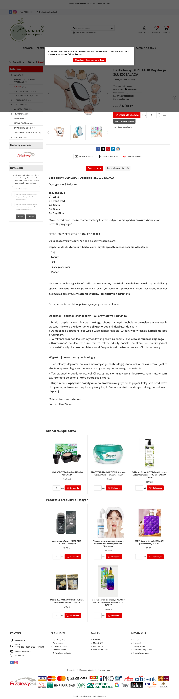

| LP | Etykieta (jak jest) | Typ / rola obiektu | Zawartość / akcje | Obserwacje (→ baza) | P | Pozycja |
|---|---|---|---|---|---|---|
| 1 | Malowidło | Header / nawigacja | Logo Malowidło po lewej, menu poziome (Makijaż, Pielęgnacja, Narzędzia, Marki, Sale), ikony koszyka i konta po prawej. Wyszukiwarka. | Białe lub jasne tło; logo brand; menu poziome z kategoriami beauty; klasyczny układ PrestaShop; brak sticky w starszych szablonach PS. | – | above fold 0px |
| 2 | Strona główna / Depilacja | Breadcrumbs | Ścieżka: Strona główna > Pielęgnacja > Depilacja > Bezbolesny Depilator. | Standardowy PS breadcrumb; mały szary tekst; linkowany; chevron separator. | – | above fold 45px |
| 3 | [packshot produkt] | Galeria produktu | Zdjęcia produktu — główne na białym tle, miniaturki pod lub obok. Depilator z nano-szkła lub podobne urządzenie. | 2–4 zdjęcia packshot; białe tło dominuje; brak lifestyle shots; średnia jakość fotografii vs GLOV; miniaturki poziome pod zdjęciem (PS standard); brak zoom przy hover lub basic lightbox. | – | above fold 75px |
| 4 | Bezbolesny Depilator — Depilacja Złuszczająca | Tytuł produktu (H1) | Tytuł produktu z benefit "bezbolesny" i opisem metody "złuszczająca". | Benefit-led tytuł (bezbolesny); metoda w tytule (złuszczająca); brak brand name w H1; format: benefit + metoda; czarny tekst, standard PS. | – | above fold 75px |
| 5 | Ref: XXXX | SKU / Reference — ps_sku_reference | Numer referencyjny produktu wyświetlony na karcie — natywny PS feature. | Mały szary tekst "Ref: [numer]"; brak u GLOV/Braun/Veet; typowy relikt PS; nieistotny dla shopperów, ale widoczny; obniża premium feel. | – | above fold 105px |
| 6 | Dostępny | Status dostępności | Wskaźnik dostępności produktu — "Dostępny" lub "Niedostępny". | Zielony badge "Dostępny" lub czerwony; natywny PS stock status; brak dokładnej ilości; standard PS. | – | above fold 120px |
| 7 | XX,XX PLN | Cena | Wyświetlenie ceny produktu w PLN. Ewentualna cena przekreślona. | Cena wyraźna; ciemny tekst lub czerwony akcent promo; PS standardowy format PLN; brak wyceny ratalne / pay later. | – | above fold 140px |
| 8 | Ilość: [1] Dodaj do koszyka | Selektor ilości + CTA | Spinner/pole ilości + przycisk "Dodaj do koszyka" — natywny PS zakup. | Spinner ilości (+-) obok pola; przycisk CTA; brak "Kup teraz"; brak Shop Pay/BLIK; standard PS bez dodatkowych płatności express; niższa konwersja vs Shopify z Shop Pay. | – | above fold 165px |
| 9 | f t p | Social sharing — ps_social_share | Rząd przycisków udostępniania: Facebook, Twitter/X, Pinterest. | Natywny PS social share moduł; małe ikony; brak Instagram/TikTok; umieszczone zaraz po CTA — zużywa cenną przestrzeń strefy decyzyjnej na nieistotny feature; charakterystyczny relikt starszego e-commerce. | – | above fold 200px |
| 10 | Opis / Dane techniczne / Recenzje | Zakładki treści PDP — ps_tabs_desc | System zakładek do nawigowania między opisem produktu, specyfikacją techniczną i recenzjami. | Natywny PS tab system; domyślna zakładka: Opis; tekst opisowy w zakładce Opis (nie visible on scroll jak u Shopify); shopper musi kliknąć zakładkę by zobaczyć spec/recenzje — niższy discovery treści. | – | above fold 280px |
| 11 | [tekst opisowy] | Opis produktu (zakładka Opis) | Dłuższy tekst opisujący produkt — korzyści, sposób działania, materiały. | Tekst ciągły lub bullets; brak wyraźnej infografiki; styl: opisowy, nie benefit-driven; jakość kopii przeciętna; brak wyróżnień benefitów; HTML tekst bez dodatkowej typografii. | – | scroll 1 350px |
| 12 | [tabela spec] | Dane techniczne (zakładka) | Tabela z parametrami: materiał, wymiary, kolor, waga itp. | Klasyczna tabela PS; wiersze: parametr / wartość; szare paski alternating; zawiera dane SKU, materiał, wymiary; minimum informacji przydatnych dla shopperów. | – | scroll 1 550px |
| 13 | Recenzje (N) | Recenzje klientów (zakładka) | Sekcja recenzji — gwiazdki + lista opinii klientów. Natywny system recenzji PS lub brak. | Natywny PS reviews lub brak recenzji; brak zaawansowanych filtrów; brak zdjęć klientów; brak weryfikacji zakupu; prosty system lub zupełny brak — słaby trust builder vs Shopify z Okendo. | – | scroll 1 750px |
| 14 | Klienci kupili też | Produkty powiązane | Grid produktów powiązanych lub "klienci kupili też" — natywny PS cross-sell. | PS standard cross-sell; kafelki z zdjęciem + nazwa + cena; brak "Quick Add"; bez zaawansowanego algorytmu rekomendacji (brak ML/AI-powered suggestions jak u Shopify). | – | scroll 2 950px |
| LP | Etykieta | Typ | Selektor CSS | Tracking | Parametry GTM | Obserwacje dev |
|---|---|---|---|---|---|---|
| 8 | Dodaj do koszyka | form[action*="/cart"] | #add_to_cart, button.btn-cart |
nieznany | – | PrestaShop native cart add; brak GTM datalayer pewne; brak GA4 enhanced ecommerce; prawdopodobnie tylko UA lub brak śledzenia. |
| LP | Etykieta | Typ | Komentarz strategiczny |
|---|---|---|---|
| 9 | Social share | ps_social_share | PROBLEM: social share przyciski zajmują miejsce w strefie decyzyjnej CTA — nikt ich nie używa (CTR social share < 0.1%). Powinny być ukryte lub przeniesione do footera PDP. |
| 10 | Zakładki | ps_tabs_desc | PROBLEM: zakładkowy układ treści chowa opis i recenzje — shopper musi aktywnie klikać by zobaczyć kluczowe treści. W Shopify/Braun treści są "on scroll" (wyższy discovery). Zakładki = friction. |
